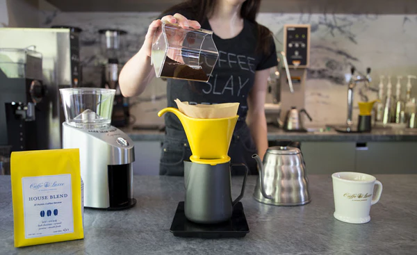

Many of us have heard of the simple rule of using 2 tablespoons of coffee for every 6oz of water. And while that recipe (or similar recipes) can definitely be used to brew coffee, they lack the precision to take your brewing to the next level. Different coffees and blends can have a wide difference between been size and density, so a tablespoon of one coffee might actually weigh significantly less than a tablespoon of another coffee. Using a scale lets you measure by weight (instead of volume), which helps make sure that no matter what coffee you’re using, you know exactly how much of it is going into you cup.
